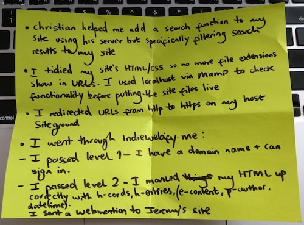

My experience of IndieWebCamp Nürnberg (check out the GIF at the end!) was complemented by Beyond Tellerrand Düsseldorf and the Evaluating Technology workshop by Jeremy Keith.
It was my first time attending any of these events and each brought its own unique experience.
The IndieWebCamp was split into two parts. On Saturday we gained inspiration from discussing different topics suggested by camp attendees. On Sunday we harnessed this inspiration and, alone or in groups, we got to work.
Through the continuous but pleasant hum of tapping keys and some select songs from a German radio station, we spent many focused hours working. The scope of the work varied quite a lot. A few of us were fairly new to the Web scene (me included), and we worked on making a number of small improvements to our sites. Some more seasoned Web developers had more specific projects in mind, from working with Grav and Jekyll (CMS), to tinkering with Webmention formats, to improving back-end systems using Node.js. Others were working on things like personas or information sites that will help encourage more people to learn about the IndieWeb. One attendee worked on a four-year old project involving creating decentralised social networking sites, with the ultimate goal being getting rid of Facebook.
We all demoed what we'd done - check these out here :)
Personally, I worked on HTTPS, site search, file extensions, HTML/CSS tidying, redirects, and passing IndieWeb levels one and two via indiewebify.me.

Thanks to Joschi for this shoutout.
Some of my takeaways from the camp were:
Thanks to Joschi for inviting me and making my stay really comfortable. Thanks to Aaron for helping the camp run so smoothly alongside Joschi and Jeremy. And thanks to Jeremy for helping me with Web stuff.
Looking forward to future IndieWebCamps - hopefully the next one will be in Brighton in September!